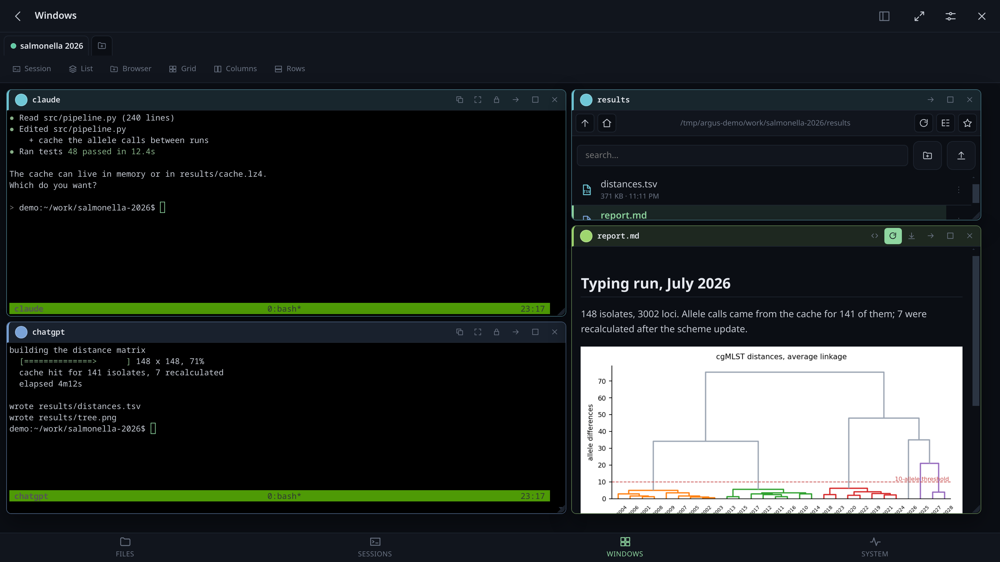
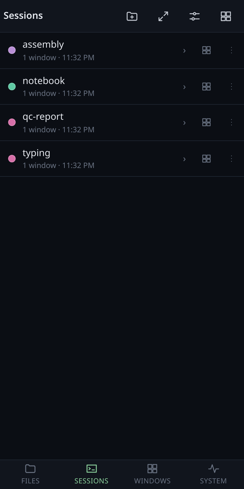
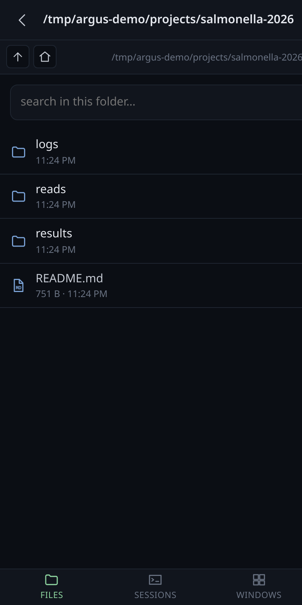

A hundred eyes on your AI agents.
Argus is a web workspace for the coding agents you already run in tmux. See which one is working and which is waiting for you, open what they wrote in one click, and answer them from your phone.
MIT licensed · runs on your machine · nothing leaves it · no account

Stop babysitting terminals.
Agents run for minutes, then stop to ask something — and you find out forty minutes later, over ssh, squinting at a pane. Argus fixes the three things that waste your day.
Know when an agent needs you
Every session says working or waiting for you — worked out from the pane itself, with nothing to install in the agent. Add a one-line hook and it rings you, too — even in another tab.
See what it produced, instantly
Every path an agent prints is a link. The report, the plot, the PDF open right beside the session that made them — rendered, not downloaded.
Keep going from your phone
The same sessions, still running, on your phone — with a real keyboard bar for Ctrl, Esc and arrows. Answer from the train; close the tab; it carries on.
Three steps. Nothing to change in how you work.
Argus attaches to the tmux sessions you already have. It does not wrap your agent, and closing the browser never stops anything.
Install it on the machine
Where your agents run — a workstation, a server, a cloud box. One script, Docker, or pip.
Open the link it prints
A URL with a private token, or a QR code for your phone. No account, no cloud relay.
Your sessions are already there
Every tmux session, the files, the reports. Start new agents from the browser too — with their first instruction typed in.
A few seconds each.
Recorded from a demo instance — made-up sessions and files, the real interface.
Click what it printed
An agent says where it wrote; one click and the report is open beside it.
Hand work to another agent
A saved prompt, filled in for this project, typed into the other agent — you press Enter.
Desks, not tabs
Terminals, folders and documents side by side, one desk per project, kept between visits.
Keep the arrangement
Tile everything, then bring your own layout back — windows and all.
The rest of the job, in one tab.
An agent's output is mostly pointers — a path, a report, a port. Argus puts the terminal and everything it points at in the same room.
Documents, rendered
Markdown with figures and diagrams, PDF with search, Word, images, and logs that open at the end.
A file browser
List or tree, drag and drop, paste a screenshot into a folder — and folders that update when a job writes to them.
Start agents from the browser
A shell or an agent from your own list, in a folder, with its first instruction — even in a fresh git worktree.
Two agents, one job
Ready-made patterns for a worker and a reviewer, talking through a file you can read.
A prompt library
Prompts with placeholders, filled per project. Drag one onto a terminal to send it.
The machine at a glance
CPU, memory, GPUs, disks, the biggest processes — with labels of your own so you remember what they are.
Local ports, reachable
A dev server on localhost, opened from your phone through Argus — only if you allow it.
An API for everything
Scripts and agents can do what the page does: start sessions, send prompts, ask you a question.
Your desk, in your pocket.
Not a desktop page squeezed onto a small screen.
- A key bar for the keys a phone has not got — Ctrl, Esc, Tab, arrows, the tmux prefix.
- The same sessions, not copies: what you started at the desk is what you answer on the train.
- Long-press a path to open it; resize windows with a finger.
- A box to write a line in, for keyboards that fight with terminals.


ssh and tmux, or Argus.
Without
- ssh in,
tmux attach, squint at a pane. - Scroll back to find the path it printed.
scpthe report out to read it.- It asked you something forty minutes ago. You did not know.
- From the phone: nothing.
With Argus
- The session is a tab, still running, exactly as you left it.
- The path is a link — one click, open beside it.
- Markdown, PDF, images and logs render in place.
- You see waiting for you the moment it stops.
- From the phone: the same desk and a keyboard that works.
Self-hosted, by design.
Nothing leaves the machine
No cloud relay, no account, no telemetry. Your code, sessions and files stay where they are.
A token per device
Every request carries a private token; revoke a phone without touching the others.
A jail for files
Only the folders you name can be read, and writing is off unless you turn it on.
Best behind a LAN, a VPN or Tailscale. How it is kept safe →
Running in a minute.
Linux and macOS; Windows through WSL or Docker. It prints a link — open it, or scan its QR code with your phone.
# read it first, then run it curl -fsSLO https://raw.githubusercontent.com/andreaderuvo/argus/master/install.sh less install.sh && bash install.sh argus --allow-write # prints a URL with a token in it
git clone https://github.com/andreaderuvo/argus && cd argus
ARGUS_UID=$(id -u) ARGUS_GID=$(id -g) docker compose up -d
# images for amd64 and arm64: ghcr.io/andreaderuvo/argusgit clone https://github.com/andreaderuvo/argus && cd argus
pip install -r requirements.txt
python3 -m app.main # prints a URL with a token in itNeeds Python 3.11+ and tmux. Getting started, step by step →
Before you try it.
Do I have to change how I use tmux?
No. Argus attaches as one more client to the sessions you already have. What you see in the browser is the same pane you would see over ssh, and closing the tab leaves everything running.
Does it need a plugin in my agent?
No. It reads what the session prints and types into it, like you do. Working and waiting are worked out from the pane. An optional one-line hook lets an agent ring you on its own.
Is it safe to reach from outside?
It is shell access behind a token, so treat it that way: a LAN, a VPN or Tailscale are the sensible shapes — Tailscale also gives you a certificate for free.
How is this different from a web terminal?
A web terminal gives you the terminal. Argus is for the other half of the job: the files the agent writes, the report it produced, the paths it printed, knowing when it needs you — and the phone.
Several machines?
Run Argus on each; Panoptes is one page over all of them, a tile per machine.
What is it built with?
Python on the server, plain JavaScript in the browser. No build step, no database, MIT licensed.
Give your agents a hundred eyes.
Free, open source, and on your own machine in a minute.